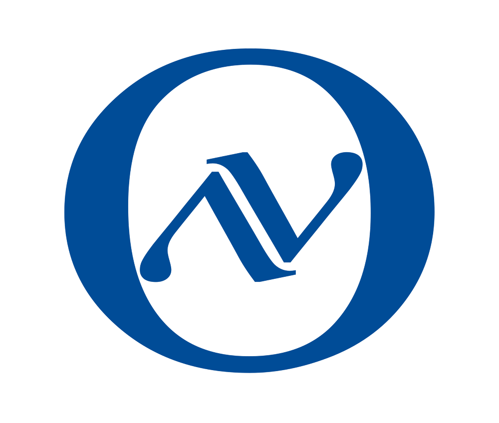
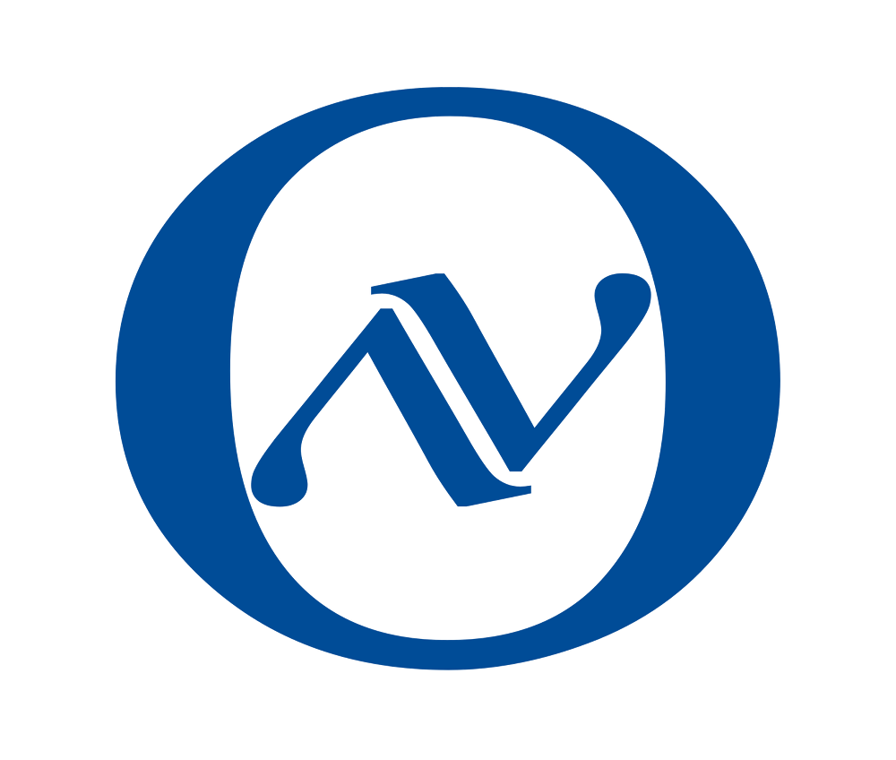

Outstanding results selected from our long list of scientific research work.
Sterile Neutrinos Search with MINOS, Daya Bay, and Bugey-3

Searches for a light sterile neutrino have been performed independently by the MINOS and the Daya Bay experiments using the muon (anti)neutrino and electron antineutrino disappearance channels, respectively. In this Letter, results
from both experiments are combined with those from the Bugey-3 reactor neutrino experiment to constrain oscillations into light sterile neutrinos. The three experiments are sensitive to complementary regions of parameter space, enabling
the combined analysis to probe regions allowed by the LSND and MiniBooNE experiments in a minimally extended four-neutrino flavor framework. Stringent limits on \(\sin^2 2\theta_{\mu e}\) are set over 6 orders of magnitude in the sterile
mass-squared splitting \(\Delta m^2_{41}\). The sterile-neutrino mixing phase space allowed by the LSND and MiniBooNE experiments is excluded for \(\sin^2 2\theta_{\mu e}
< 0.8~\text{eV}^2\) at $95\%~\text{CL}_s$.
MINOS and Daya Bay/Bugey-3 combined $90\%~\text{CL}_s$ limit on $\sin^{2}2\theta_{\mu e}$ compared to the LSND and MiniBooNE $90\%~\text{C.L.}$ allowed regions. Regions of parameter space to the right of the red contour are excluded. The regions excluded at $90\%~\text{C.L.}$ by KARMEN2 and NOMAD are also shown. We note that the excursion to small mixing in the exclusion contour at around $\Delta m^{2}_{41} \sim 5 \times 10^{-3}~\text{eV}^{2}$ is due to the degenerate island in the MINOS exclusion limit. Also shown are the $90\%~\text{C.L.}$ allowed regions of two global fits. The Kopp et al. 2013 fit included $\nu_{e}$ appearance experiments, and the Gariazzo et al. 2016 fit included all short-baseline experiments with the exception of MiniBooNE data below $475~\text{MeV}$.
Large Extra Dimensions Search in MINOS

We report new constraints on the size of large extra dimensions from data collected by the MINOS experiment between 2005 and 2012. Our analysis employs a model in which sterile neutrinos arise as Kaluza-Klein states in large extra
dimensions and thus modify the neutrino oscillation probabilities due to mixing between active and sterile neutrino states. Using Fermilab's NuMI beam exposure of $10.56 \times 10^{20}$ protons-on-target, we combine muon neutrino chargedx
current and neutral current data sets from the Near and Far Detectors and observe no evidence for deviations from standard three-flavor neutrino oscillations. The ratios of reconstructed energy spectra in the two detectors constrain the
size of large extra dimensions to be smaller than $0.45~\mu\text{m}$ at $90\%~\text{C.L.}$ in the limit of a vanishing lightest active neutrino mass. Stronger limits are obtained for non-vanishing masses.
Comparison of the $90\%~\text{C.L.}$ data contour for the LED model, obtained using the Feldman-Cousins technique, based on $10.56\times10^{20}$ POT MINOS data and the contour obtained when adding $5.80 \times10^{20}$ POT MINOS+ data. Only normal mass ordering was assumed in the fit. The large extra dimension size and the smallest neutrino mass are denoted as $R$ and $m_0$, respectively. The shaded area indicates the excluded region to the right of the contour. In the limit of vanishing $m_0$, the large extra dimension size is constrained to be smaller than $0.45\,\mu\text{m}$ at $90\%~\text{C.L.}$ by the MINOS dataset and $0.17\,\mu\text{m}$ at $90\%~\text{C.L.}$ by the MINOS/MINOS+ combined dataset.

Our work focuses on experimental neutrino physics.
We are currently part of MINOS/MINOS+, NOvA, SuperNEMO and MINER.
 


Neutrino Oscillations
MINOS/MINOS+, NOνA and future DUNE. Yup, we study neutrino oscillations. We proved that neutrinos have mass, yahooo!
Neutrinoless Double Beta Decay
We also in NEMO3 and future SuperNEMO. Our students builded the source deployment system here in UT.
Neutrino Coherent Scattering
We are new to this field. Much to learn. This type of experiment is extremely difficult. No one, in the last 40 years has been successful. But hopefully, we will create a "wow" in physics community.
Detector R&D
Finally, we do detector R&D too. Simulation, hardware design, electronics, we do all of them. Especially, we don't want to be left behind in the advent of LAr technology. We are working on it too.